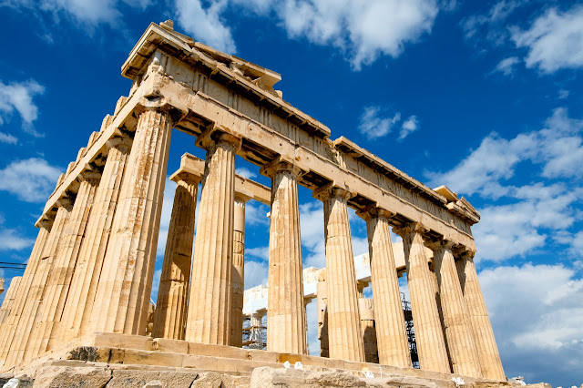
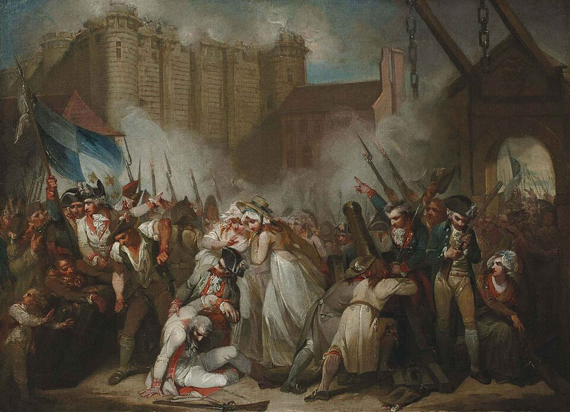
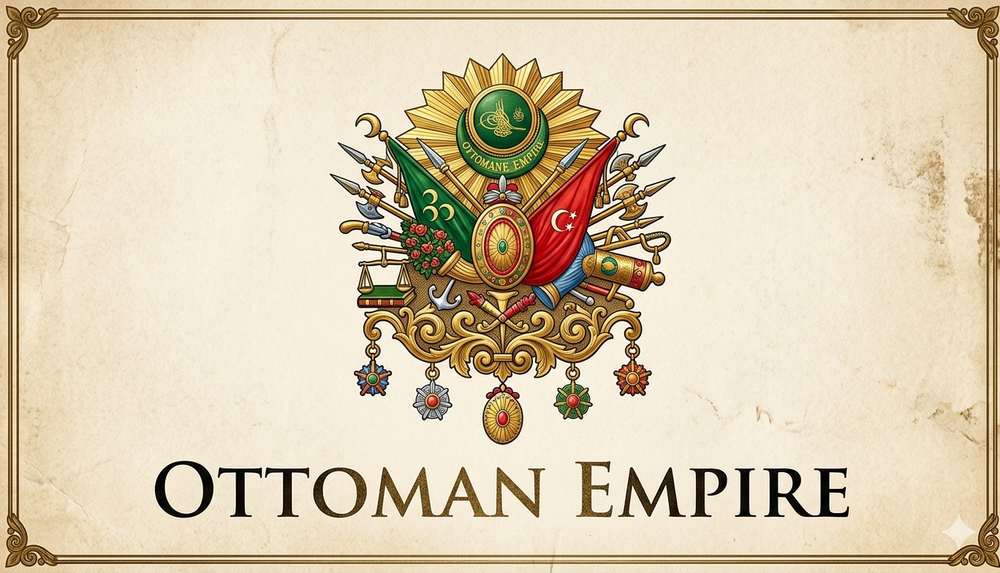
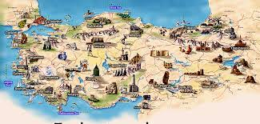
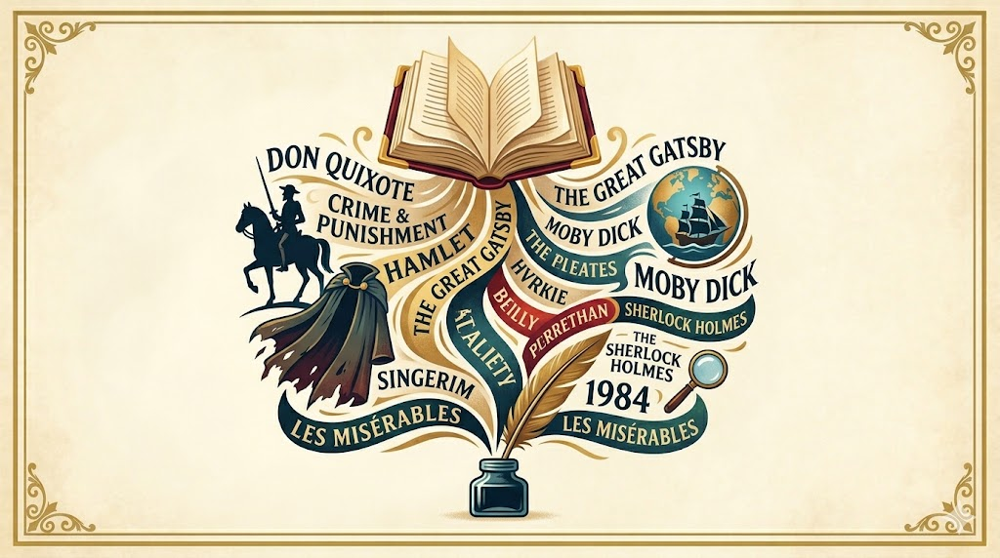
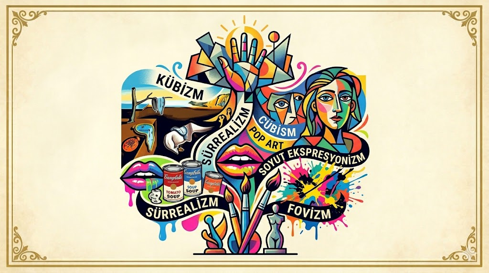

Test 1Antik Çağ ve Mitoloji
Antik Yunan, Mısır ve Roma medeniyetleri hakkında temel bilgiler.
15 Soru
15 Dakika
Teste Başla
Tarihten sanata, coğrafyadan spora kadar farklı kategorilerde bilgini ölç.
Dünya tarihi, Osmanlı tarihi ve önemli olaylar üzerine testler.

Test 1Antik Yunan, Mısır ve Roma medeniyetleri hakkında temel bilgiler.

Test 2Dünya savaşları ve modern Türkiye'nin kuruluşu üzerine sorular.

Test 3Padişahlar, fetihler ve Osmanlı kültürü üzerine kapsamlı test.
Ülkeler, başkentler, dağlar ve doğal harikalar.
 Test 1
Test 1
Dünya ülkelerini başkentlerinden ve bayraklarından tanı.

Test 2Ülkemizin gölleri, dağları ve bölgeleri hakkında genel bilgiler.
Klasik eserler, ünlü ressamlar ve dünya edebiyatı.

Test 1Unutulmaz yazarlar ve onların başyapıtları üzerine sorular.
 Test 2
Test 2
Rönesans'tan modern sanata, fırça izlerini takip et.

Test 3Kübizm, Sürrealizm ve Pop Art dünyasına bir yolculuk.